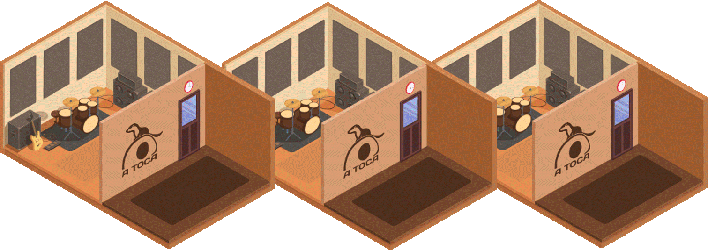

Laboratório criativo para musicos, bandas, DJs, streamers e criativos no geral.
Salas de Ensaio, estudios de webcast, espaço para formação e eventos culturais.
Reservar Agora
3 cabines (16, 26 e 27m2). Insonorizadas para eliminar interferencias com o exterior, acusticamente tratadas para melhor qualidade de som. Com backline (bateria, amplificadores e PA).
Preços à hora por sala entre 14 e 25€
Streaming, podcasts, gravação de conteúdos e transmissões online.
Salão com 90m2, para Workshops, apresentações e eventos culturais privados.
A Toca é uma incubadora artística criada para apoiar músicos, criadores e projetos culturais através da disponibilização de espaços, recursos e oportunidades de colaboração.
As reservas são geridas através da plataforma Jammed.
Reservar através da JammedEstamos a preparar uma campanha para aquisição de instrumentos e equipamentos de áudio para a comunidade artística local.